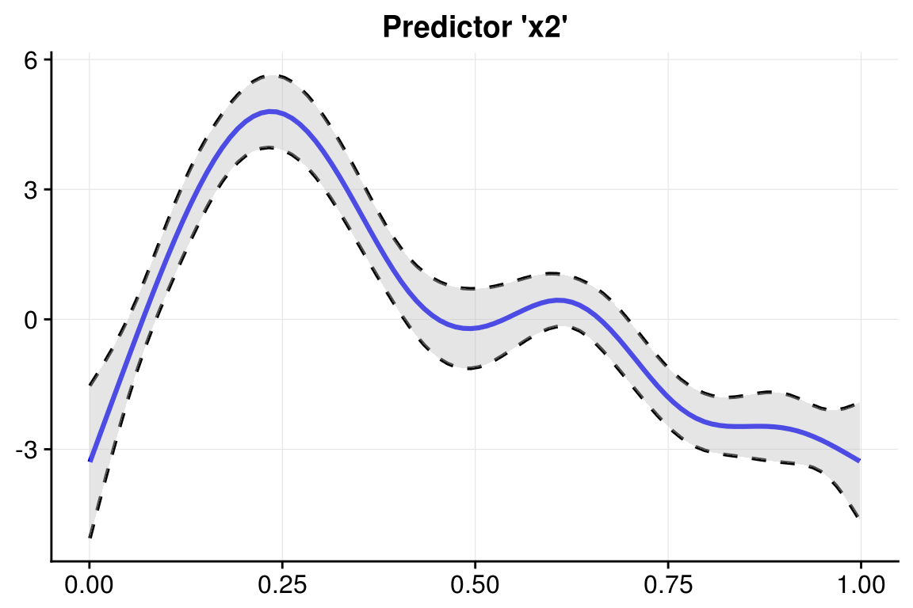
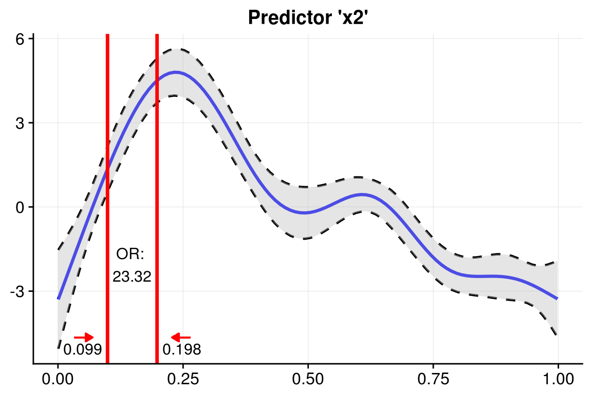
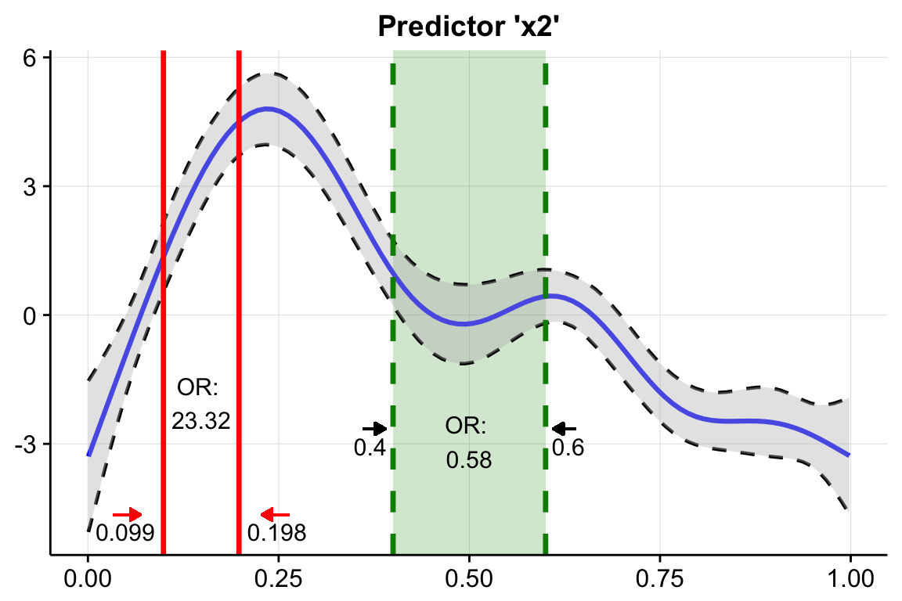

Data source: ?mgcv::predict.gam
library(oddsratio)
fit_gam <- mgcv::gam(y ~ s(x0) + s(I(x1^2)) + s(x2) + offset(x3) + x4,
data = data_gam)To calculate specific increment steps of fit_gam, we take predictor x2 (randomly chosen) and specify for which values we want to calculate the odds ratio.
We can see that the odds of response y happening are 22 times higher when predictor x2 increases from 0.099 to 0.198 while holding all other predictors constant.
or_gam(data = data_gam, model = fit_gam, pred = "x2",
values = c(0.099, 0.198))
#> predictor value1 value2 oddsratio CI_low (2.5%) CI_high (97.5%)
#> 1 x2 0.099 0.198 23.32353 23.30424 23.34283Usually, this calculation is done by setting all predictors to their mean value, predict the response, change the desired predictor to a new value and predict the response again. These actions results in two log odds values, respectively, which are transformed into odds by exponentiating them. Finally, the odds ratio can be calculated from these two odds values.
If the predictor is an indicator variable, i.e. consists of fixed levels, you can use the function in the same way by just putting in the respective levels you are interested in:
or_gam(data = data_gam, model = fit_gam,
pred = "x4", values = c("A", "B"))
#> predictor value1 value2 oddsratio CI_low (2.5%) CI_high (97.5%)
#> 1 x4 A B 1.377537 1.334837 1.421604Here, the change in odds of y happening if predictor x4 is changing from level A to B is rather small. In detail, an increase in odds of 37.8% is reported.
To get an impression of odds ratio behaviour throughout the complete range of the smoothing function of the fitted GAM model, you can calculate odds ratios based on percentage breaks of the predictors distribution.
Here we slice predictor x2 into 5 parts by taking the predictor values of every 20% increment step.
or_gam(data = data_gam, model = fit_gam, pred = "x2",
percentage = 20, slice = TRUE)
#> predictor value1 value2 perc1 perc2 oddsratio CI_low (2.5%)
#> 1 x2 0.001 0.200 0 20 2510.77 1091.68
#> 2 x2 0.200 0.400 20 40 0.03 0.03
#> 3 x2 0.400 0.599 40 60 0.58 0.56
#> 4 x2 0.599 0.799 60 80 0.06 0.06
#> 5 x2 0.799 0.998 80 100 0.41 0.75
#> CI_high (97.5%)
#> 1 5774.53
#> 2 0.03
#> 3 0.60
#> 4 0.06
#> 5 0.22We can see that there is a high odds ratio reported when increasing predictor x2 from 0.008 to 0.206 while all further predictor increases decrease the odds of response y happening substantially.
Right now, the only (quick) possibility to plot the smoothing functions of a GAM(M) was to use the base plot() function. The fiddly work to do the same using the ggplot2 plotting system is done by plot_gam():
plot_gam(fit_gam, pred = "x2", title = "Predictor 'x2'")
You can further customize the look using other colors or linetypes.
So now, we have the odds ratios and we have a plot of the smoothing function. Why not combine both? We can do so using insert_or(). Its main arguments are (i) a ggplot plotting object containing the smooth function and a data frame returned from or_gam() containing information about the predictor and the respective values we want to insert.
plot_object <- plot_gam(fit_gam, pred = "x2", title = "Predictor 'x2'")
or_object <- or_gam(data = data_gam, model = fit_gam,
pred = "x2", values = c(0.099, 0.198))
plot <- insert_or(plot_object, or_object, or_yloc = 3,
values_xloc = 0.05, arrow_length = 0.02,
arrow_col = "red")
plot
The odds ratio information is always centered between the two vertical lines. Hence it only looks nice if the gap between the two chosen values (here 0.099 and 0.198) is large enough. If the smoothing line crosses your inserted text, you can just correct it adjusting or_yloc. This param sets the y-location of the inserted odds ratio information.
Depending on the digits of your chosen values (here 3), you might also need to adjust the x-axis location of the two values so that they do not interfer with the vertical line.
Let’s do all this by inserting another odds ratio into this plot! This time we simply take the already produced plot as an input to insert_or() and use a new odds ratio object:
or_object2 <- or_gam(data = data_gam, model = fit_gam,
pred = "x2", values = c(0.4, 0.6))
insert_or(plot, or_object2, or_yloc = 2.1, values_yloc = 2,
line_col = "green4", text_col = "black",
rect_col = "green4", rect_alpha = 0.2,
line_alpha = 1, line_type = "dashed",
arrow_xloc_r = 0.01, arrow_xloc_l = -0.01,
arrow_length = 0.02, rect = TRUE) 
Using rect = TRUE, you can additionally highlight certain odds ratio intervals. Aesthetics like opacity or color are fully customizable.
Fit model.
Data source: http://www.ats.ucla.edu/stat/r/dae/logit.htm
fit_glm <- glm(admit ~ gre + gpa + rank, data = data_glm, family = "binomial")For GLMs, the odds ratio calculation is simpler because odds ratio changes correspond to fixed predictor increases throughout the complete value range of each predictor.
Hence, function or_glm takes the increment steps of each predictor directly as an input in its parameter incr.
To avoid false predictor/value assignments, the combinations need to be given in a list.
Odds ratios of indicator variables are computed automatically and do always refer to the base factor level.
Indicator predictor rank has four levels. Subsequently, we will get three odds ratio outputs referring to the base factor level (here: rank1).
The output is interpreted as follows: “Having rank2 instead of rank1 while holding all other values constant results in a decrease in odds of 49.1% (1-0.509)”.
or_glm(data = data_glm, model = fit_glm, incr = list(gre = 380, gpa = 5))
#> predictor oddsratio CI_low (2.5 %) CI_high (97.5 %) increment
#> 1 gre 2.364 1.054 5.396 380
#> 2 gpa 55.712 2.229 1511.282 5
#> 3 rank2 0.509 0.272 0.945 Indicator variable
#> 4 rank3 0.262 0.132 0.512 Indicator variable
#> 5 rank4 0.212 0.091 0.471 Indicator variableYou can also set other confident intervals for GLM(M) models. The resulting data frame will automatically adjust its column names to the specified level.
or_glm(data = data_glm, model = fit_glm,
incr = list(gre = 380, gpa = 5), CI = 0.70)
#> predictor oddsratio CI_low (15 %) CI_high (85 %) increment
#> 1 gre 2.364 1.540 3.647 380
#> 2 gpa 55.712 10.084 314.933 5
#> 3 rank2 0.509 0.366 0.706 Indicator variable
#> 4 rank3 0.262 0.183 0.374 Indicator variable
#> 5 rank4 0.212 0.136 0.325 Indicator variable